the error now depends on two parameters — how does it change when we change one of them?
what must be true at the lowest point?
Recall: the derivative measures how the error changes
Unit 2’s first example: three friends guess your age, \(19,\ 21,\ 20\).
A single answer \(x\) has error
\[f(x)=(19-x)^2+(21-x)^2+(20-x)^2 .\]
Derivative = change in error per unit change in the parameter (MML Def. 5.2, p.141):
\[f'(x)=\lim_{h\to0}\frac{f(x+h)-f(x)}{h}.\]
Here:
\[f'(x)=-2(19-x)-2(21-x)-2(20-x)=6x-120 .\]
Recall: the derivative predicts the error after a small step
The error: \(f(x)=(19-x)^2+(21-x)^2+(20-x)^2\), \(f'(x)=6x-120\).
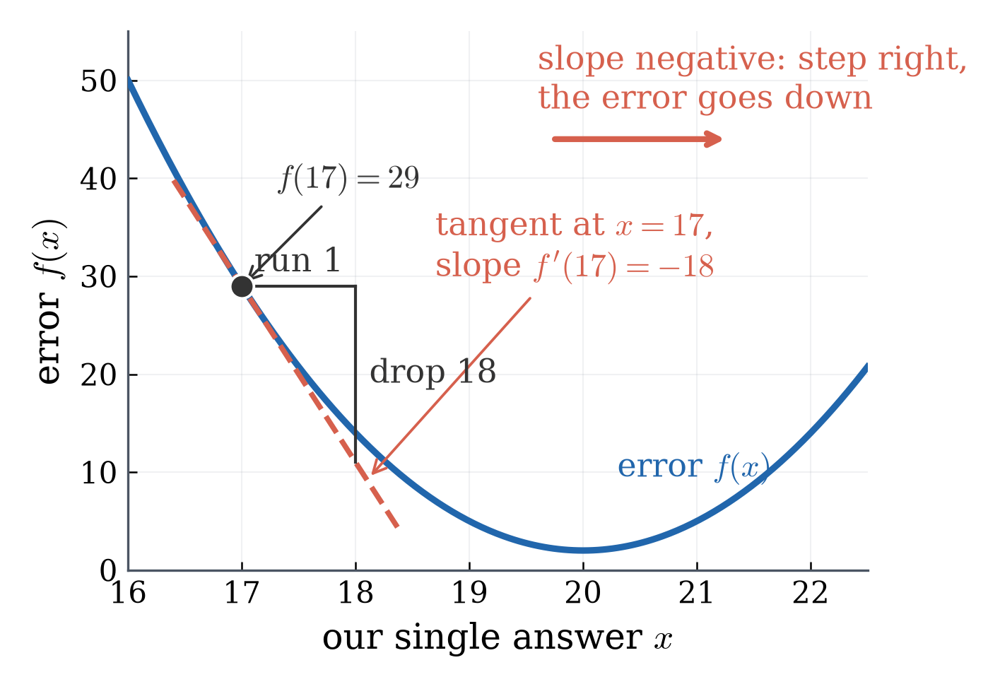
First-order prediction:
\[f(x+\Delta x)\approx f(x)+f'(x)\,\Delta x .\]
Recall: the derivative predicts the error after a small step
The error: \(f(x)=(19-x)^2+(21-x)^2+(20-x)^2\), \(f'(x)=6x-120\).
First-order prediction:
\[f(x+\Delta x)\approx f(x)+f'(x)\,\Delta x .\]
quantity
value
\(f(17)\)
\(29\)
\(f'(17)\)
\(-18\)
predicted \(f(17.1)\)
\(29-18(0.1)=27.2\)
actual \(f(17.1)\)
\(27.23\)
Close, not equal: the curve bends away from its tangent.
Recall: at an interior lowest point, \(f'(x)=0\)
At an interior lowest point: \(f'(x)=0\). [MASTER]
This is necessary, not sufficient. Flat does not mean lowest:
\(f(x)=-x^2\), a hill: flat at \(0\) and highest there.
\(f(x)=x^3\): flat at \(0\) and keeps rising through it.
The task: which rule fits three students best?
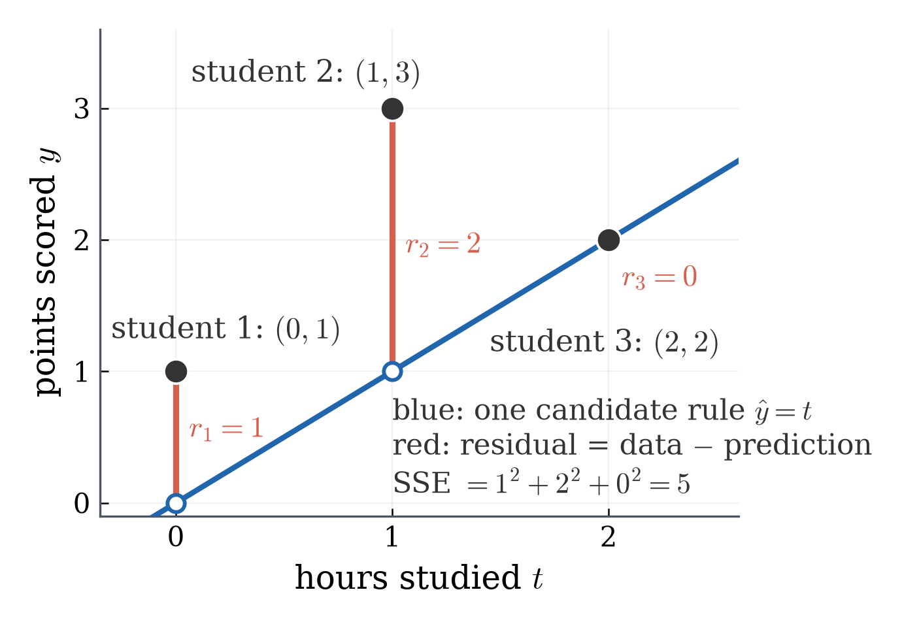
Three students (Quiz 1, Problem 4):
student \(i\)
hours \(t_i\)
points \(y_i\)
1
0
1
2
1
3
3
2
2
As vectors: \(\mathbf t=(0,1,2)^\top\), \(\mathbf y=(1,3,2)^\top\).
Student \(i\) is the point \((t_i,y_i)\) in the figure.
The task: which rule fits three students best?
The task: predict a student’s score from the hours they studied.
Which rule fits these three students best?
What does “best” mean?
Score a rule by its residuals; “best” = smallest SSE
Residual: \(r=y-\hat y\) (data minus prediction).
Score a rule by its residuals; “best” = smallest SSE
Residual: \(r=y-\hat y\) (data minus prediction).
The rule \(\hat y=t\):
student
\(t\)
\(y\)
\(\hat y=t\)
\(r=y-\hat y\)
\(r^2\)
1
0
1
0
1
1
2
1
3
1
2
4
3
2
2
2
0
0
Definition (MML §9.2.1, p.294, eq. (9.10b) without its constant factor). The sum of squared errors is \(\mathrm{SSE}=r_1^2+r_2^2+r_3^2=\norm{\mathbf r}^2\). “Best” = smallest \(\mathrm{SSE}\). [MASTER]
Step 3 — set it to zero (\(\mathbf t\neq\mathbf 0\)), for every dataset:
\[w^\ast=\dfrac{\mathbf t^\top\mathbf y}{\mathbf t^\top\mathbf t}.\qquad\text{Ours: }\tfrac75 .\]
This is L03’s projection formula \(\lambda=\dfrac{\mathbf b^\top\mathbf x}{\mathbf b^\top\mathbf b}\) with \(\mathbf b=\mathbf t\), \(\mathbf x=\mathbf y\).
\(\mathbf t^\top\mathbf r=0\) is L03’s picture: at the best \(w\), the residual is perpendicular to \(\mathbf t\).
Two parameters: the rule \(\hat y=w_0+w_1t\) in matrix form
Same three students: \(\mathbf t=(0,1,2)^\top\), \(\mathbf y=(1,3,2)^\top\).
Matrix form \(\hat{\mathbf y}=X\mathbf w\) (Quiz 1, Problem 4):
\[X=\begin{bmatrix}1&0\\1&1\\1&2\end{bmatrix},\qquad \mathbf w=\begin{bmatrix}w_0\\w_1\end{bmatrix}.\]
One row per student; a column of ones for the baseline.
The error: \(\mathrm{SSE}(w_0,w_1)=3w_0^2+6w_0w_1+5w_1^2-12w_0-14w_1+14\).
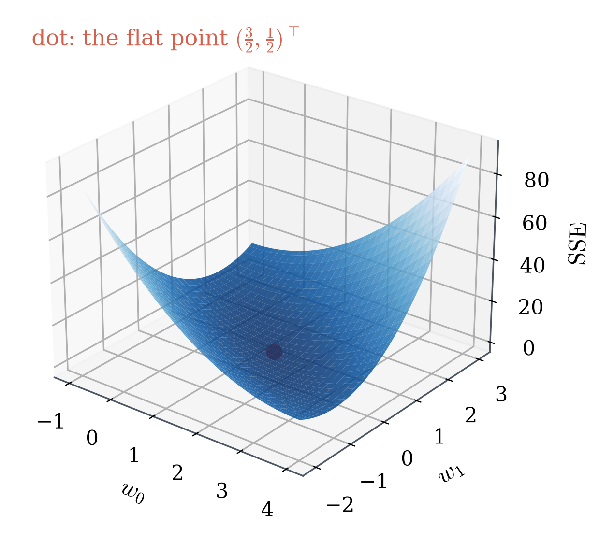
The parameter is now a point in a plane.
The error is the height of the surface above it.
Training is a walk on the error surface
The error: \(\mathrm{SSE}(w_0,w_1)=3w_0^2+6w_0w_1+5w_1^2-12w_0-14w_1+14\).
Training = changing the parameters so the error goes down.
One step downhill:
parameters \((w_0,w_1)^\top\)
error \(\mathrm{SSE}\)
\((0,0)^\top\)
\(14\)
\((1,1)^\top\)
\(2\)
Training is a walk on the error surface
The error: \(\mathrm{SSE}(w_0,w_1)=3w_0^2+6w_0w_1+5w_1^2-12w_0-14w_1+14\).
“Change the parameters a little” now has more than one meaning.
Which way is down, and how steep?
Freeze one parameter: a slice of the error surface, and its slope
The error: \(\mathrm{SSE}(w_0,w_1)=3w_0^2+6w_0w_1\) \(+5w_1^2-12w_0-14w_1+14\).
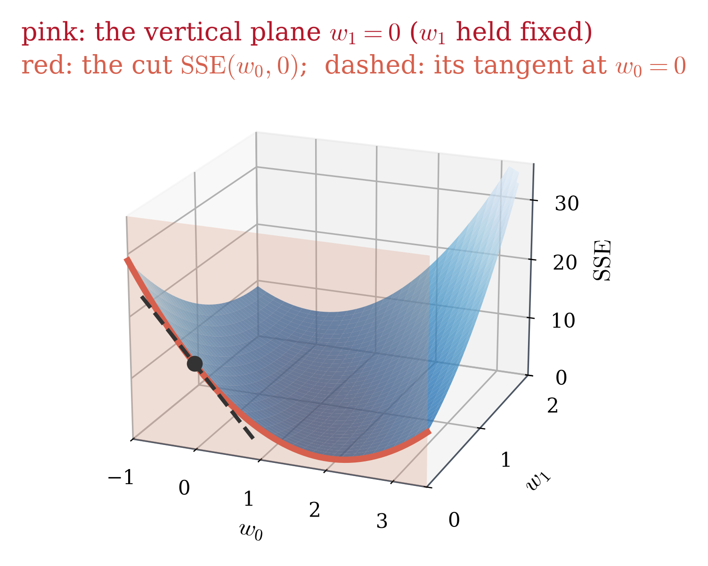
Hold \(w_1=0\). The vertical plane \(w_1=0\) (pink) cuts the surface along a curve (red).
On that curve only \(w_0\) moves:
\[\mathrm{SSE}(w_0,0)=3w_0^2-12w_0+14 .\]
Its ordinary Calculus 1 slope: \(6w_0-12\).
At \(w_0=0\): height \(14\) (the dot), slope \(-12\) (the dashed tangent).
Two slices, two slopes at \((0,0)^\top\)
The error: \(\mathrm{SSE}(w_0,w_1)=3w_0^2+6w_0w_1+5w_1^2-12w_0-14w_1+14\).
hold
slice (one variable)
Calculus 1 slope
slope at \((0,0)^\top\)
\(w_1=0\)
\(\mathrm{SSE}(w_0,0)=3w_0^2-12w_0+14\)
\(6w_0-12\)
\(-12\)
\(w_0=0\)
\(\mathrm{SSE}(0,w_1)=5w_1^2-14w_1+14\)
\(10w_1-14\)
\(-14\)
Each slope is an ordinary derivative taken with the other parameter frozen.
This kind of derivative gets its own name.
The partial derivative
Definition (MML Def. 5.5, p.146). The partial derivative of \(g(w_0,w_1)\) with respect to \(w_0\) is
\[\frac{\partial g}{\partial w_0}=\lim_{h\to0}\frac{g(w_0+h,\;w_1)-g(w_0,\;w_1)}{h},\]
the ordinary derivative of \(w_0\mapsto g(w_0,w_1)\) with \(w_1\) held fixed; similarly for \(w_1\). [MASTER]
How to compute it: treat the other parameter as a constant.
Then use Calculus 1.
The two partial derivatives of SSE
The error: \(\mathrm{SSE}(w_0,w_1)=3w_0^2+6w_0w_1+5w_1^2-12w_0-14w_1+14\).
At \((0,0)^\top\) they are \(-12\) and \(-14\): the slopes of the two slices.
“But \(w_1\) is held fixed — why is \(w_1\) in \(\partial\,\mathrm{SSE}/\partial w_0\)?”
Fixed is not absent: the slope depends on where \(w_1\) is frozen: \(-12\) at \((0,0)^\top\), \(-6\) at \((0,1)^\top\).
Without expanding: the chain rule on each square
The error: \(\mathrm{SSE}=r_1^2+r_2^2+r_3^2\), with \(r_i=y_i-w_0-w_1t_i\), i.e. \(\mathbf r=\mathbf y-X\mathbf w\).
Goal: the two partial derivatives, straight from the residuals.
Columns of \(X\): \(\mathbf 1=(1,1,1)^\top\) and \(\mathbf t=(0,1,2)^\top\).
Chain rule on one square — the same move as \(f'(x)=-2(19-x)-2(21-x)-2(20-x)\):
\[\frac{\partial\,(r_i^2)}{\partial w_j}=2r_i\,\frac{\partial r_i}{\partial w_j}.\]
Inner derivatives, from \(r_i=y_i-w_0-w_1t_i\):
\[\frac{\partial r_i}{\partial w_0}=-1,\qquad\frac{\partial r_i}{\partial w_1}=-t_i .\]
Each partial derivative is \(-2\times(\text{a column of }X)^\top\mathbf r\)
From the chain rule: \(\partial(r_i^2)/\partial w_j=2r_i\,\partial r_i/\partial w_j\), with \(\partial r_i/\partial w_0=-1\), \(\;\partial r_i/\partial w_1=-t_i\). Data: \(\mathbf t=(0,1,2)^\top\), \(\mathbf 1=(1,1,1)^\top\).
Add over the three students:
\[\frac{\partial\,\mathrm{SSE}}{\partial w_0}=-2\,(r_1+r_2+r_3)=\mathbf{-2\,\mathbf 1^\top\mathbf r},\qquad \frac{\partial\,\mathrm{SSE}}{\partial w_1}=-2\,(0\,r_1+1\,r_2+2\,r_3)=\mathbf{-2\,\mathbf t^\top\mathbf r} .\]
Check against expanding first:
from the residuals
from the expanded SSE
\(w_0\)
\(-2\,\mathbf 1^\top\mathbf r=-2(6-3w_0-3w_1)\)
\(6w_0+6w_1-12\)
✓
\(w_1\)
\(-2\,\mathbf t^\top\mathbf r=-2(7-3w_0-5w_1)\)
\(6w_0+10w_1-14\)
✓
One partial derivative per column of \(X\): the one-parameter shape again
Data \(\mathbf y=(1,3,2)^\top\); columns \(\mathbf t=(0,1,2)^\top\), \(\mathbf 1=(1,1,1)^\top\).
At \((0,0)^\top\) both are negative: \(-12\) and \(-14\).
So raising \(w_0\) alone lowers the error:
step \(w_0: 0\to0.1\)
error
\(\mathrm{SSE}(0,0)\)
\(14\)
first-order prediction
\(14-12(0.1)=12.8\)
actual \(\mathrm{SSE}(0.1,0)\)
\(12.83\)
A nonzero partial derivative is a way down.
Theorem: at a lowest point, every partial derivative of SSE is zero
Theorem. Let \(\mathrm{SSE}\) be differentiable. If it is smallest at an interior point \((w_0^\ast,w_1^\ast)^\top\) (here the parameters range over all of \(\R^2\)), then both partial derivatives are zero there. [MASTER]
Plan of the proof — restrict to a line and use the one-variable fact:
Freeze \(w_1=w_1^\ast\): a function of \(w_0\) alone.
That function is smallest at \(w_0^\ast\).
Calculus 1: its derivative is \(0\) there — and that derivative is \(\partial\,\mathrm{SSE}/\partial w_0\).
Same for \(w_1\), freezing \(w_0\) instead.
Proof: freeze one parameter, use the one-variable fact
To prove: \(\mathrm{SSE}\) smallest at interior \((w_0^\ast,w_1^\ast)^\top\) ⇒ both partial derivatives are \(0\) there.
Freeze \(w_1=w_1^\ast\): \(u(w_0)=\mathrm{SSE}(w_0,w_1^\ast)\) is a function of one variable.
\(u\) is smallest at \(w_0^\ast\):
\(\mathrm{SSE}(w_0^\ast,w_1^\ast)\le\mathrm{SSE}(w_0,w_1)\) for every pair;
in particular for the pairs \((w_0,w_1^\ast)^\top\): \(u(w_0^\ast)\le u(w_0)\).
Calculus 1:
\(w_0^\ast\) is interior to \(\R\), so \(u'(w_0^\ast)=0\).
\(u'\) is the derivative in \(w_0\) with \(w_1\) held at \(w_1^\ast\) (Def. 5.5), so \(\partial\,\mathrm{SSE}/\partial w_0\,(w_0^\ast,w_1^\ast)=0\).
The other one: freeze \(w_0=w_0^\ast\) instead; the same steps give \(\partial\,\mathrm{SSE}/\partial w_1\,(w_0^\ast,w_1^\ast)=0\).
Set both to zero:
\[6w_0+6w_1-12=0,\qquad 6w_0+10w_1-14=0 .\]
Divide by \(2\), write as a matrix equation:
\[\begin{bmatrix}3&3\\3&5\end{bmatrix}\begin{bmatrix}w_0\\w_1\end{bmatrix}=\begin{bmatrix}6\\7\end{bmatrix}.\]
Each equation is one line in the figure.
The equations are Unit 2’s normal equation
The system: \(3w_0+3w_1=6\), \(\;3w_0+5w_1=7\), i.e. \(\left[\begin{smallmatrix}3&3\\3&5\end{smallmatrix}\right]\mathbf w=\left[\begin{smallmatrix}6\\7\end{smallmatrix}\right]\). Columns of \(X\): \(\mathbf 1=(1,1,1)^\top\), \(\mathbf t=(0,1,2)^\top\); data \(\mathbf y=(1,3,2)^\top\).
These are \(X^\top X\) and \(X^\top\mathbf y\): every entry is a dot product.
entry
dot product
value
\(X^\top X\), top left
\(\mathbf 1^\top\mathbf 1\) (number of students)
\(3\)
\(X^\top X\), off diagonal
\(\mathbf 1^\top\mathbf t\)
\(3\)
\(X^\top X\), bottom right
\(\mathbf t^\top\mathbf t\)
\(5\)
\(X^\top\mathbf y\), top
\(\mathbf 1^\top\mathbf y\)
\(6\)
\(X^\top\mathbf y\), bottom
\(\mathbf t^\top\mathbf y\)
\(7\)
So “set both partial derivatives to zero” is \(X^\top X\mathbf w=X^\top\mathbf y\) — L04’s normal equation, reached by calculus instead of geometry. Its solution is your answer to Quiz 1, Problem 4(b).
Solve: the flat point \(\left(\tfrac32,\tfrac12\right)^\top\)
The system: \(3w_0+3w_1=6\), \(\;3w_0+5w_1=7\).
Subtract the equations: \(2w_1=1\), so \(w_1=\tfrac12\).
Substitute back: \(w_0=\tfrac32\).
In the figure: where the two lines cross.
Solve: the flat point \(\left(\tfrac32,\tfrac12\right)^\top\)
The system: \(3w_0+3w_1=6\), \(\;3w_0+5w_1=7\).
Subtract the equations: \(2w_1=1\), so \(w_1=\tfrac12\).
Substitute back: \(w_0=\tfrac32\).
Both partial derivatives are zero at exactly one point, the flat point \(\mathbf w_{\text{flat}}=\left(\tfrac32,\tfrac12\right)^\top\). MML calls such a point a stationary point (Ch. 7, p.225).
The flat point’s line and its error
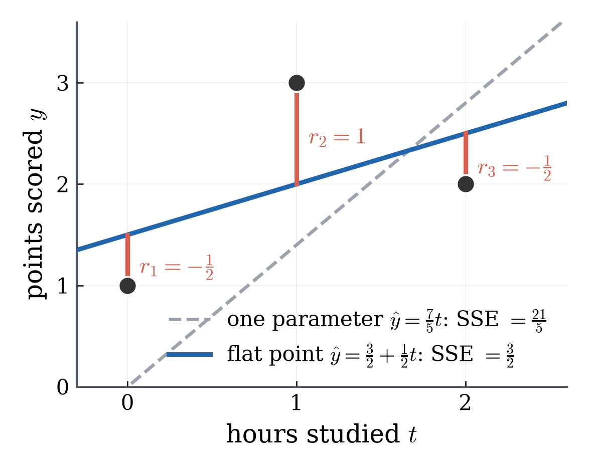
\(\mathbf w_{\text{flat}}=\left(\tfrac32,\tfrac12\right)^\top\) gives the rule \(\hat y=\tfrac32+\tfrac12t\).
A baseline of \(\tfrac32\) points plus \(\tfrac12\) point per hour.
The flat point’s line and its error
\(\mathbf w_{\text{flat}}=\left(\tfrac32,\tfrac12\right)^\top\) gives the rule \(\hat y=\tfrac32+\tfrac12t\).
L09 takeaways (2/2): lowest ⇒ flat ⇒ normal equation
At a lowest point every partial derivative is zero. [MASTER]
Proof: freeze the other parameter and use the one-variable fact.
For \(\hat y=w_0+w_1t\): \(\partial\,\mathrm{SSE}/\partial w_0=0\), \(\partial\,\mathrm{SSE}/\partial w_1=0\) are \(X^\top X\mathbf w=X^\top\mathbf y\). [MASTER]
Flat point \(\left(\tfrac32,\tfrac12\right)^\top\), \(\mathrm{SSE}=\tfrac32\), against \(\tfrac{21}{5}\) for one parameter.
SSE and L04’s MSE differ by the factor \(n\): same best parameters, same flat points, different error values. [MASTER]
We have a flat point. Flat is not the same as lowest — and with two parameters there are far more ways to be flat. L10 settles it.
L10 — Why the Flat Point Is the Lowest
L09 found the flat point \(\mathbf w_{\text{flat}}=\left(\tfrac32,\tfrac12\right)^\top\): both partial derivatives of the error \(\mathrm{SSE}\) are zero there.
L10 proves: no other \(\mathbf w\) has a smaller error.
L10 asks: when does no other \(\mathbf w\) tie it?
Reading
MML §3.8, pp.81–90 (orthogonal projections) as background; the argument itself is Unit 2’s Pythagoras
\(\mathrm{SSE}\) is flat at \(\mathbf w_{\text{flat}}=\left(\tfrac32,\tfrac12\right)^\top\), where \(\mathrm{SSE}(\mathbf w_{\text{flat}})=\tfrac32\). Is that the lowest error?
\(f(x)=x^3\) is flat at \(0\): \(\;f'(0)=0\).
But it is not lowest at \(0\): \(\;f(-1)=-1<f(0)=0\).
Flat is about one point; lowest compares with every point.
To show: \(\mathbf w_{\text{flat}}\) is a global minimum (MML Ch. 7 introduction, p.225) [MASTER]
\[\mathrm{SSE}(\mathbf w)\ge\tfrac32\quad\text{for every }\mathbf w\in\R^2 .\]
\(\mathbf y\) is not in the plane: no line fits all three students.
\(X\mathbf w_{\text{flat}}=\left(\tfrac32,2,\tfrac52\right)^\top\) is one point of the plane.
Before the theorem: one \(\mathbf w\), one right triangle
Flat point \(\mathbf w_{\text{flat}}=\left(\tfrac32,\tfrac12\right)^\top\); another point \(\mathbf w=(2,-1)^\top\).
side
vector
squared length
red leg \(\mathbf r_{\text{flat}}=\mathbf y-X\mathbf w_{\text{flat}}\)
\(\left(-\tfrac12,1,-\tfrac12\right)^\top\)
\(\tfrac32\)
blue leg (in the plane) \(X\mathbf d=X\mathbf w-X\mathbf w_{\text{flat}}\)
\(\left(\tfrac12,-1,-\tfrac52\right)^\top\)
\(\tfrac{15}{2}\)
hypotenuse \(\mathbf y-X\mathbf w\)
\((-1,2,2)^\top\)
\(9=\mathrm{SSE}(2,-1)\)
\(9=\tfrac32+\tfrac{15}{2}\): the three sides obey Pythagoras.
Before the theorem: one \(\mathbf w\), one right triangle
Flat point \(\mathbf w_{\text{flat}}=\left(\tfrac32,\tfrac12\right)^\top\); another point \(\mathbf w=(2,-1)^\top\).
The red leg looks perpendicular to the plane; the proof must show it is.
If every \(\mathbf w\) gives such a right triangle, then \(\mathrm{SSE}(\mathbf w)=\tfrac32+\) a square \(\ge\tfrac32\), and the flat point is the lowest. Does it?
Theorem (Pythagoras for least squares). For every \(\mathbf w\in\R^2\),
\[\mathrm{SSE}(\mathbf w)=\mathrm{SSE}(\mathbf w_{\text{flat}})+\norm{X(\mathbf w-\mathbf w_{\text{flat}})}^2 .\]
In particular \(\mathrm{SSE}(\mathbf w)\ge\mathrm{SSE}(\mathbf w_{\text{flat}})=\norm{\mathbf r_{\text{flat}}}^2=\tfrac32\): the flat point is a global minimum. [MASTER]
The proof: one goal, four steps toward it
Goal (one thing to prove): for every \(\mathbf w\), with \(\mathbf d=\mathbf w-\mathbf w_{\text{flat}}\),
That is enough: \(\norm{X\mathbf d}^2\) is a squared length, never negative, so \(\mathrm{SSE}(\mathbf w)\ge\norm{\mathbf r_{\text{flat}}}^2=\tfrac32\).
\(\mathrm{SSE}(\mathbf w)=\norm{\mathbf y-X\mathbf w}^2\); the flat point \(\mathbf w_{\text{flat}}=\left(\tfrac32,\tfrac12\right)^\top\) has residual \(\mathbf r_{\text{flat}}=\mathbf y-X\mathbf w_{\text{flat}}\).
\(\mathbf d=\mathbf w-\mathbf w_{\text{flat}}\) — name the step from the flat point to any \(\mathbf w\)
\(X\mathbf w=X(\mathbf w_{\text{flat}}+\mathbf d)=X\mathbf w_{\text{flat}}+X\mathbf d\) — multiply out
The rows of \(X^\top\) are the columns \(\mathbf 1=(1,1,1)^\top\), \(\mathbf t=(0,1,2)^\top\); \(\;\mathbf r_{\text{flat}}=\left(-\tfrac12,1,-\tfrac12\right)^\top\).
row of \(X^\top\mathbf r_{\text{flat}}\)
value
meaning
\(\mathbf 1^\top\mathbf r_{\text{flat}}\)
\(-\tfrac12+1-\tfrac12=0\)
the residuals add to zero
\(\mathbf t^\top\mathbf r_{\text{flat}}\)
\(0+1-1=0\)
Inner product zero is what orthogonal means (MML Def. 3.7, p.77): \(\;\mathbf r_{\text{flat}}\perp\mathbf 1\) and \(\mathbf r_{\text{flat}}\perp\mathbf t\).
At the flat point, the residual is orthogonal to every column of \(X\).[MASTER]
Calculus (both slopes zero) and geometry (L04: residual \(\perp\) the columns) give the same equation.
Step 3 of 4 — Orthogonality: \(\mathbf r_{\text{flat}}\perp X\mathbf d\) for every \(\mathbf d\)
From Step 1: \(\mathrm{SSE}(\mathbf w)=\norm{\mathbf r_{\text{flat}}-X\mathbf d}^2\). From Step 3: \((X\mathbf d)^\top\mathbf r_{\text{flat}}=0\).
\(\norm{\mathbf a-\mathbf b}^2=\norm{\mathbf a}^2-2\,\mathbf a^\top\mathbf b+\norm{\mathbf b}^2\) — true for any vectors
\(\mathbf a=\mathbf r_{\text{flat}},\;\mathbf b=X\mathbf d\): the cross term \(-2\,\mathbf r_{\text{flat}}^\top X\mathbf d=0\) — Step 3
\(\mathrm{SSE}(\mathbf w)=\norm{\mathbf r_{\text{flat}}}^2+\norm{X\mathbf d}^2\) — the goal
\(\phantom{\mathrm{SSE}(\mathbf w)}\ge\norm{\mathbf r_{\text{flat}}}^2=\mathrm{SSE}(\mathbf w_{\text{flat}})\) — a squared length \(\norm{X\mathbf d}^2\) is never negative
The flat point is a global minimum.
The goal is reached: the flat point earns the name \(\mathbf w^\ast\)
Proved (Steps 1–4): \(\;\mathrm{SSE}(\mathbf w)=\tfrac32+\norm{X(\mathbf w-\mathbf w_{\text{flat}})}^2\ge\tfrac32\;\) for every \(\mathbf w\in\R^2\).
Now we have earned the names[MASTER]
\[\mathbf w^\ast=\left(\tfrac32,\tfrac12\right)^\top,\qquad \mathbf r^\ast=\mathbf y-X\mathbf w^\ast=\left(-\tfrac12,1,-\tfrac12\right)^\top .\]
Same shape as L03: the projection \(\lambda\mathbf b\) of \(\mathbf x\) onto the line through \(\mathbf b\) is closest, since any other \(\mu\mathbf b\) has
\[\norm{\mathbf x-\mu\mathbf b}^2=\norm{\mathbf r}^2+(\lambda-\mu)^2\norm{\mathbf b}^2 .\]
What “global” adds over “flat”
\(\mathrm{SSE}(w_0,w_1)=3w_0^2+6w_0w_1+5w_1^2-12w_0-14w_1+14\), lowest at \(\mathbf w^\ast=\left(\tfrac32,\tfrac12\right)^\top\).
Uniqueness. \(\mathbf w^\ast\) is the only \(\mathbf w\) with \(\mathrm{SSE}(\mathbf w)=\mathrm{SSE}(\mathbf w^\ast)\) exactly when the columns of \(X\) are linearly independent (MML Def. 2.12, p.40), that is, when \(\operatorname{rank}X\) equals the number of columns (MML §2.6.2, p.47). [MASTER]
Every \(\mathbf w=\left(\tfrac32,\;\tfrac12-2s,\;s\right)^\top\) predicts
\[\tfrac32+\left(\tfrac12-2s\right)t+s\cdot2t=\tfrac32+\tfrac12t\qquad\text{— } s \text{ cancels.}\]
\(s\)
\(\mathbf w\)
predictions
residual \(\mathbf r\)
error
\(0\)
\(\left(\tfrac32,\tfrac12,0\right)^\top\)
\(\left(\tfrac32,2,\tfrac52\right)^\top\)
\(\left(-\tfrac12,1,-\tfrac12\right)^\top\)
\(\tfrac32\)
\(\tfrac14\)
\(\left(\tfrac32,0,\tfrac14\right)^\top\)
\(\left(\tfrac32,2,\tfrac52\right)^\top\)
\(\left(-\tfrac12,1,-\tfrac12\right)^\top\)
\(\tfrac32\)
any \(s\)
\(\left(\tfrac32,\tfrac12-2s,s\right)^\top\)
\(\left(\tfrac32,2,\tfrac52\right)^\top\)
\(\left(-\tfrac12,1,-\tfrac12\right)^\top\)
\(\tfrac32\)
Counterexample: every one of them is a global minimum
\(X_c=\left[\begin{smallmatrix}1&0&0\\1&1&2\\1&2&4\end{smallmatrix}\right]\), \(\;\mathbf r=\left(-\tfrac12,1,-\tfrac12\right)^\top\) for every \(\mathbf w=\left(\tfrac32,\tfrac12-2s,s\right)^\top\).
Exact, not approximate: the cross term \(-2\,\mathbf r^{\ast\top}X(\mathbf w-\mathbf w^\ast)\) is zero.
So the flat point is the global minimum.
L10 takeaways: our numbers, and when the best \(\mathbf w\) is unique
Our data: \(\mathrm{SSE}(\mathbf w)=\tfrac32+\norm{X(\mathbf w-\mathbf w^\ast)}^2\) with \(\mathbf w^\ast=\left(\tfrac32,\tfrac12\right)^\top\). [MASTER]
\(\mathbf w\)
\((0,0)^\top\)
\((2,-1)^\top\)
\((1,1)^\top\)
\(\mathrm{SSE}(\mathbf w)\)
\(14\)
\(9\)
\(2\)
The minimum is unique exactly when the columns of \(X\) are linearly independent. [MASTER]
That is: L05’s rank equals the number of columns.
Dependent columns give a whole family of \(\mathbf w\) with the same predictions and the same error.
\(\partial\,\mathrm{SSE}/\partial w_0\) and \(\partial\,\mathrm{SSE}/\partial w_1\) are slopes along the axes. Nobody changes one parameter at a time. L11: the slope in any direction.
L11 — One Vector Answers Every Direction
Reading
MML §5.2, pp.146–147: eq. (5.40) and the Remark on p.147
MML §7.1, p.228: the paragraph beginning “Gradient descent is a first-order optimization algorithm” (contour lines)
MML §7.1, p.228: the paragraph after it (steepest descent)
Why ask about directions, if L10 already found the lowest point?
L10: the lowest point is \(\mathbf w^\ast=\left(\tfrac32,\tfrac12\right)^\top\).
Least squares: setting the derivatives to zero gives linear equations, \(X^\top X\mathbf w=X^\top\mathbf y\).
Many models used in AI: it does not.
Training then starts at some parameters and steps downhill, again and again(MML Ch. 7, p.226, and §7.1, p.228).
Our three students are a test bench: we know the bottom, so we can check where downhill leads.
From \((0,0)^\top\), error \(14\): which direction lowers the error fastest?
Different models, the same error
Data \(\mathbf t=(0,1,2)^\top\) hours, \(\mathbf y=(1,3,2)^\top\) points; model \(\hat y=w_0+w_1t\); error
Equally bad models: the squares \(1,4,9\) reshuffled, \(\mathrm{SSE}=14\) each.
Moving among them makes no progress.
The map: contours of the error
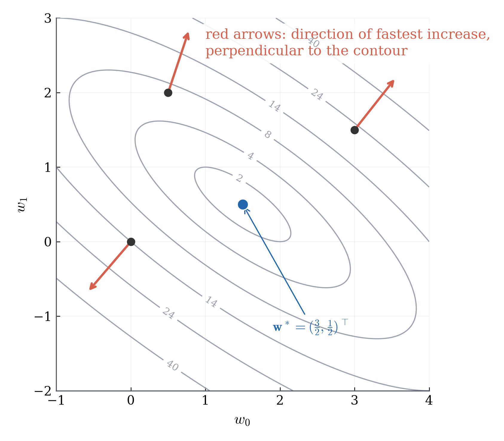
Definition (MML §7.1, p.228, contour lines). The contour of \(\mathrm{SSE}\) at level \(c\) is the set of all \(\mathbf w\) with \(\mathrm{SSE}(\mathbf w)=c\). [MASTER]
Figure:
Grey curves: the contours at levels \(2,4,8,14,24,40\).
They shrink toward the blue point \(\mathbf w^\ast\), where \(\mathrm{SSE}=\tfrac32\).
Two contours never cross: each point has one error.
For training: along a contour, no progress; going down means crossing toward smaller levels.
The problem: a partial derivative only walks along an axis (1/2)
For \(\mathrm{SSE}=3w_0^2+6w_0w_1+5w_1^2-12w_0-14w_1+14\), L09’s partial derivatives are
At \((0,0)^\top\) they are \(-12\) and \(-14\): along the \(w_0\) axis the error starts falling at \(12\) per unit step, along the \(w_1\) axis at \(14\).
These are two directions out of infinitely many. A trainer changes both parameters at once, and wants the fastest way down.
The problem: a partial derivative only walks along an axis (2/2)
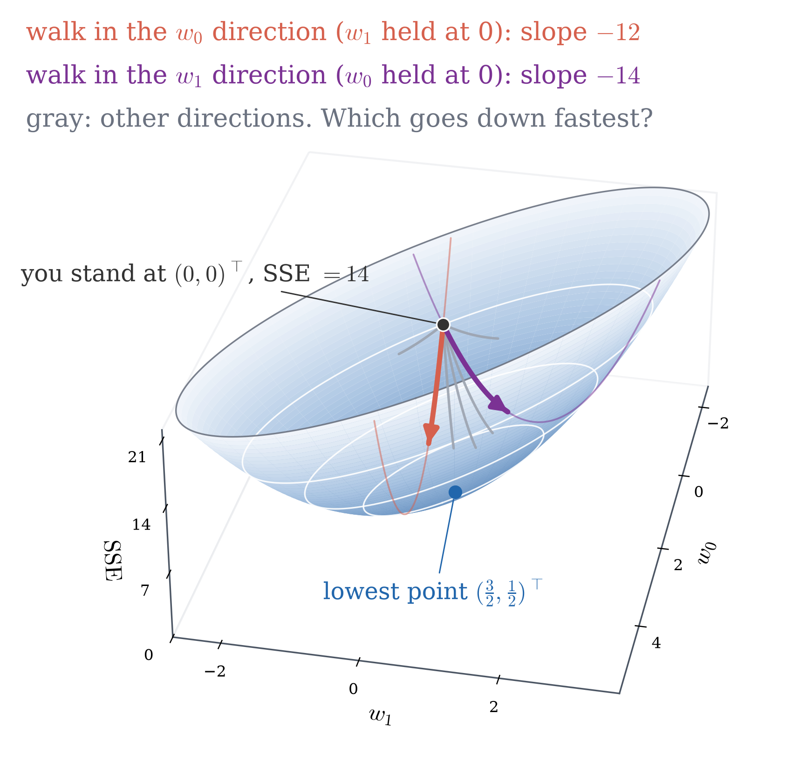
Step a distance \(h\) in a unit direction \(\mathbf u=(u_0,u_1)^\top\). How fast does the error change? Which \(\mathbf u\) changes it fastest?
Any direction: restrict the surface to a line
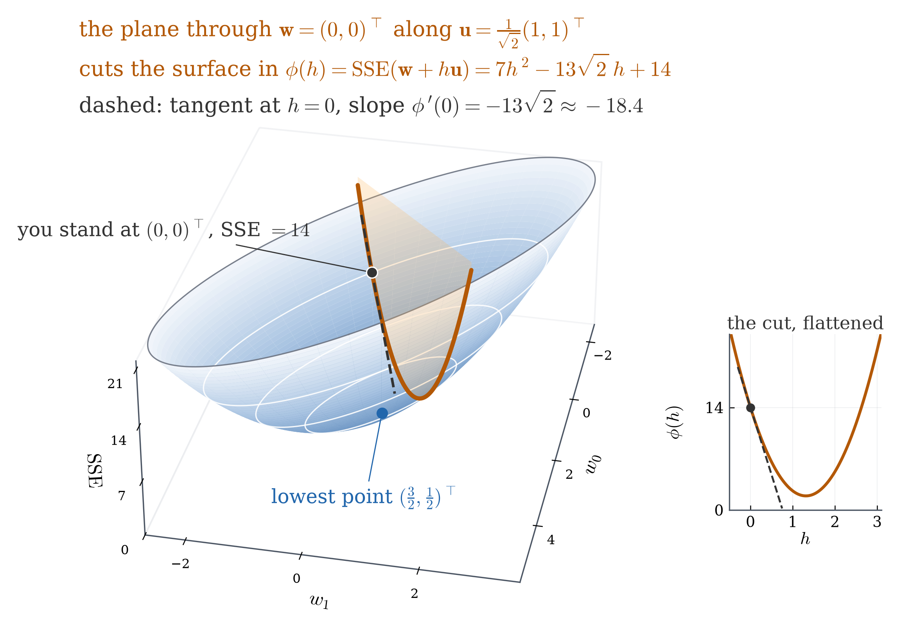
A direction is a column \(\mathbf u\) with \(\norm{\mathbf u}=1\).
Then \(h\) is the distance walked: \(\norm{h\mathbf u}=|h|\).
On the line of points \(\mathbf w+h\mathbf u\), the error depends on one number:
\[\phi(h)=\mathrm{SSE}(\mathbf w+h\mathbf u),\qquad \phi(0)=\mathrm{SSE}(\mathbf w).\]
Its slope at \(h=0\) is Calculus 1.
Example: the diagonal direction from \((0,0)^\top\) (1/2)
The error: \(\mathrm{SSE}=3w_0^2+6w_0w_1+5w_1^2-12w_0-14w_1+14\).
\(\mathbf w=(0,0)^\top\), \(\;\mathbf u=\tfrac{1}{\sqrt2}(1,1)^\top\) — start, direction
\(w_0=w_1=\tfrac{h}{\sqrt2}\) — the points \(\mathbf w+h\mathbf u\)
\(\phi(h)=7h^2-13\sqrt2\,h+14\) — put into \(\mathrm{SSE}\)
\(\phi'(0)=-13\sqrt2\approx-18.385\) — differentiate, set \(h=0\)
Example: the diagonal direction from \((0,0)^\top\) (2/2)
direction from \((0,0)^\top\)
\(w_0\) axis
\(w_1\) axis
\(\tfrac1{\sqrt2}(1,1)^\top\)
rate of change of the error
\(-12\)
\(-14\)
\(-18.385\)
Moving both parameters at once beats either axis.
No new calculus: restrict to a line, differentiate as usual.
Name the slope: the directional derivative
Definition (Stewart, Calculus, §14.6; MML has no numbered definition). The directional derivative of \(g\) at \(\mathbf w\) in the unit direction \(\mathbf u\) is \(\;D_{\mathbf u}g=\phi'(0)\), where \(\phi(h)=g(\mathbf w+h\mathbf u)\). [MASTER]
For \(\mathrm{SSE}=3w_0^2+6w_0w_1+5w_1^2-12w_0-14w_1+14\) at \((0,0)^\top\), put \(w_0=hu_0,\ w_1=hu_1\):
direction \(\mathbf u\)
\(\phi(h)\)
\(D_{\mathbf u}\mathrm{SSE}=\phi'(0)\)
which is
\((1,0)^\top\), the \(w_0\) axis
\(3h^2-12h+14\)
\(-12\)
\(\partial\,\mathrm{SSE}/\partial w_0\)
\((0,1)^\top\), the \(w_1\) axis
\(5h^2-14h+14\)
\(-14\)
\(\partial\,\mathrm{SSE}/\partial w_1\)
\(\tfrac1{\sqrt2}(1,1)^\top\)
\(7h^2-13\sqrt2\,h+14\)
\(-13\sqrt2\approx-18.385\)
\(-\tfrac1{\sqrt2}(1,1)^\top\), the way back
\(7h^2+13\sqrt2\,h+14\)
\(+13\sqrt2\)
What the table of directional derivatives shows
At \((0,0)^\top\): \(\;\partial\,\mathrm{SSE}/\partial w_0=-12,\ \ \partial\,\mathrm{SSE}/\partial w_1=-14\).
Along an axis, the directional derivative is the partial derivative.
Turning around (\(-\mathbf u\) instead of \(\mathbf u\)) flips the sign.
The diagonal \(\mathbf u=\tfrac1{\sqrt2}(1,1)^\top\) is a dot product with the two partial derivatives:
\[D_{\mathbf u}\mathrm{SSE}=-13\sqrt2=(-12)\cdot\tfrac1{\sqrt2}+(-14)\cdot\tfrac1{\sqrt2}=\begin{bmatrix}-12\\-14\end{bmatrix}^{\!\top}\mathbf u .\]
The slope along \(\mathbf u\) is the projection of \((-12,-14)^\top\) onto \(\mathbf u\)
At \((0,0)^\top\): \(\;D_{\mathbf u}\mathrm{SSE}=\begin{bmatrix}-12\\-14\end{bmatrix}^{\!\top}\mathbf u\), with \(\norm{\mathbf u}=1\).
L03: projecting a vector \(\mathbf x\) onto the line of a unit vector \(\mathbf u\) gives \((\mathbf u^\top\mathbf x)\,\mathbf u\).
The number \(\mathbf u^\top\mathbf x\) says how far along \(\mathbf u\) the shadow of \(\mathbf x\) lands.
Take \(\mathbf x=(-12,-14)^\top\), the two partial derivatives at \((0,0)^\top\).
Then \(D_{\mathbf u}\mathrm{SSE}=\mathbf u^\top\mathbf x\) = the projection of \((-12,-14)^\top\) onto \(\mathbf u\).
Meaning: \(D_{\mathbf u}\mathrm{SSE}\) is the rate of change of \(\mathrm{SSE}\) per unit step in the direction \(\mathbf u\).
If the slope along every \(\mathbf u\) is this projection, two numbers give the slope in all directions — no more substituting.
The slope in every direction, from the two partial derivatives
Formula. If \(g\) is differentiable at \(\mathbf w\), then for every unit direction \(\mathbf u=(u_0,u_1)^\top\), with the partial derivatives taken at \(\mathbf w\):
\[D_{\mathbf u}g=u_0\,\frac{\partial g}{\partial w_0}+u_1\,\frac{\partial g}{\partial w_1}=\begin{bmatrix}\dfrac{\partial g}{\partial w_0}&\dfrac{\partial g}{\partial w_1}\end{bmatrix}\mathbf u .\]
[MASTER]
Why, for our \(\mathrm{SSE}\): the plan, four steps
\(\phi(h)\) is a quadratic in \(h\).
So \(\phi'(0)\) is the coefficient of \(h\).
Collect the \(h\)-terms.
Group them by \(u_0\) and \(u_1\): the two partial derivatives appear.
Why the formula holds for our \(\mathrm{SSE}\)
The error: \(\mathrm{SSE}=3w_0^2+6w_0w_1+5w_1^2-12w_0-14w_1+14\); any point \(\mathbf w\), any unit \(\mathbf u\).
\(\phi(h)=\mathrm{SSE}(w_0+hu_0,\,w_1+hu_1)=ah^2+bh+c\) — \(\mathrm{SSE}\) is quadratic
\(\phi'(0)=b\), the coefficient of \(h\) — the \(h^2\) terms drop out at \(h=0\)
The \(h\)-terms, piece by piece — expand
piece of \(\mathrm{SSE}\)
\(3w_0^2\)
\(6w_0w_1\)
\(5w_1^2\)
\(-12w_0-14w_1\)
its \(h\)-coefficient
\(6w_0u_0\)
\(6w_0u_1+6w_1u_0\)
\(10w_1u_1\)
\(-12u_0-14u_1\)
Group by \(u_0\) and \(u_1\):
\[\phi'(0)=u_0\,\underbrace{(6w_0+6w_1-12)}_{\partial\mathrm{SSE}/\partial w_0}+\;u_1\,\underbrace{(6w_0+10w_1-14)}_{\partial\mathrm{SSE}/\partial w_1}.\]
Check the formula, and when it holds
The formula: \(D_{\mathbf u}g=\begin{bmatrix}\partial g/\partial w_0&\partial g/\partial w_1\end{bmatrix}\mathbf u\).
At \((0,0)^\top\): \(\;D_{\mathbf u}\mathrm{SSE}=\begin{bmatrix}-12&-14\end{bmatrix}\mathbf u\).
For \(\mathbf u=\tfrac1{\sqrt2}(1,1)^\top\): this is \(-13\sqrt2\) ✓, the value found by substituting.
⚠️ A general \(g\) must be differentiable.
Continuous partial derivatives suffice; the polynomial \(\mathrm{SSE}\) is differentiable.
General proof: L14’s matrix chain rule, stated, not proved.
One row answers every direction: the gradient
Definition (MML eq. (5.40), p.146). For \(g(\mathbf w)\) with \(\mathbf w\in\R^d\), the gradient is the row vector of partial derivatives
\[\nabla g=\frac{d\,g}{d\mathbf w}=\begin{bmatrix}\dfrac{\partial g}{\partial w_0}&\cdots&\dfrac{\partial g}{\partial w_{d-1}}\end{bmatrix}\in\R^{1\times d},
\qquad\text{so}\qquad D_{\mathbf u}g=\nabla g\,\mathbf u .\]
Notation: \(d\) for the derivative with respect to the whole vector \(\mathbf w\); \(\partial\) for one entry \(w_j\). [MASTER]
Every directional slope at \(\mathbf w\) is the same row \(\nabla g\) times a different column \(\mathbf u\): \((1\times d)(d\times1)=1\times1\), one number.
For \(\mathrm{SSE}=3w_0^2+6w_0w_1+5w_1^2-12w_0-14w_1+14\): \(\;\nabla\mathrm{SSE}=\begin{bmatrix}6w_0+6w_1-12&6w_0+10w_1-14\end{bmatrix}\).
Why the gradient is defined this way
\(\nabla g=\begin{bmatrix}\dfrac{\partial g}{\partial w_0}&\cdots&\dfrac{\partial g}{\partial w_{d-1}}\end{bmatrix}\), and for a unit direction \(\mathbf u\): \(\;D_{\mathbf u}g=\nabla g\,\mathbf u\).
\(\nabla g\,\mathbf u\) is a dot product: \((\nabla g)^\top\) with \(\mathbf u\).
With \(\norm{\mathbf u}=1\), a dot product is a projection (L03): how far along \(\mathbf u\) the gradient’s shadow lands.
So: rate of change of \(g\) along \(\mathbf u\) = projection of the gradient onto \(\mathbf u\).
The definition is not arbitrary. It collects exactly the numbers whose projection gives the slope in every direction.
Why a row? A function with one output has a one-row derivative.
In L14 this row is the Jacobian of a one-output function, and the chain rule becomes a matrix product (MML Remark “Gradient as a Row Vector”, p.147).
⚠️ Mind the transpose. A direction to walk in is a column: \((\nabla g)^\top\).
This course writes the transpose out every time.
The gradient of SSE as one row: \(-2\,\mathbf r^\top X\)
What we compute with
\(\mathbf y=(1,3,2)^\top\); \(X\) has columns \(\mathbf 1=(1,1,1)^\top\) and \(\mathbf t=(0,1,2)^\top\); residual \(\mathbf r=\mathbf y-X\mathbf w\).
From L09: \(\;\partial\,\mathrm{SSE}/\partial w_0=-2\,\mathbf 1^\top\mathbf r=6w_0+6w_1-12\).
From L09: \(\;\partial\,\mathrm{SSE}/\partial w_1=-2\,\mathbf t^\top\mathbf r=6w_0+10w_1-14\).
Put them in a row
\(\nabla\mathrm{SSE}=-2\begin{bmatrix}\mathbf 1^\top\mathbf r&\mathbf t^\top\mathbf r\end{bmatrix}\) — the two partial derivatives side by side
\(\phantom{\nabla\mathrm{SSE}}=-2\,\mathbf r^\top X\) — a row times a matrix is the row times each column
Shapes: \((1\times3)(3\times2)=1\times2\).
Why this form? The polynomial works only for our two parameters. \(-2\,\mathbf r^\top X\) is written with the data \(X\) and the residual \(\mathbf r\) as wholes: the same line for any number of features. L12 proves it.
At \((0,0)^\top\): \(-(\nabla\mathrm{SSE})^\top=(12,14)^\top=2\,(6,7)^\top\)
Walk straight along it
\(\mathbf w=s\,(6,7)^\top\) — the line
\(\mathrm{SSE}=605s^2-170s+14\) — put into \(\mathrm{SSE}\)
Lowest at \(s=\tfrac{17}{121}\) — vertex of the parabola
That is the point \(\left(\tfrac{102}{121},\tfrac{119}{121}\right)^\top\approx(0.843,\,0.983)^\top\)
Error there \(\tfrac{249}{121}\approx2.06\), still above \(\mathrm{SSE}(\mathbf w^\ast)=\tfrac32\)
Walk too far in a good direction: overshooting
On the line \(\mathbf w=s\,(6,7)^\top\): \(\;\mathrm{SSE}=605s^2-170s+14\).
\(s\)
where
\(\mathrm{SSE}\)
\(0\)
the start \((0,0)^\top\)
\(14\)
\(\tfrac{17}{121}\)
the lowest point on the line
\(\tfrac{249}{121}\approx2.06\)
\(\tfrac{34}{121}\)
twice as far
\(14\), the starting error again
\(\tfrac{51}{121}\)
three times as far
\(\tfrac{6029}{121}\approx49.8\)
Past the lowest point, the same downhill direction makes the error larger and larger.
This is overshooting: a step that is too long jumps past the low point.
MML §7.1.1, p.229: a step-size that is too large “can overshoot, fail to converge, or even diverge”. How far to step: Unit 5.
Overshooting on the contour map
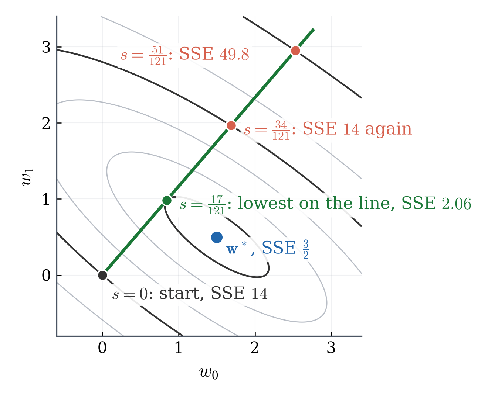
Green dot: the lowest point on the line, SSE \(2.06\).
Next dot: SSE \(14\) again, on the same contour as the start.
Last dot: SSE \(49.8\), outside the start’s contour.
\(\mathbf w^\ast\) (blue) is not on the line at all.
The fastest way down does not point at the bottom
The line from \((0,0)^\top\): \(\mathbf w=s\,(6,7)^\top\).
\(w_1/w_0\)
on the line
\(\tfrac76\)
at \(\mathbf w^\ast=\left(\tfrac32,\tfrac12\right)^\top\)
\(\tfrac13\)
\(\mathbf w^\ast\) is not on that line. The fastest way down does not point at the bottom.
The lowest point on a line: the line touches a contour there (1/2)
Line \(\mathbf w=s\,(6,7)^\top\); its lowest point \(\left(\tfrac{102}{121},\tfrac{119}{121}\right)^\top\), \(\;\mathrm{SSE}\approx2.06\).
There the slope along the line is \(0\): the vertex of the parabola \(605s^2-170s+14\).
Slope \(0\) in a direction \(\iff\) that direction is orthogonal to \((\nabla\mathrm{SSE})^\top\) \(\iff\) it is tangent to the contour.
So the line touches the contour \(\mathrm{SSE}\approx2.06\) there. This holds for the lowest point on any line, not by luck.
The lowest point on a line: the line touches a contour there (2/2)
Line \(\mathbf w=s\,(6,7)^\top\); its lowest point \(\left(\tfrac{102}{121},\tfrac{119}{121}\right)^\top\), \(\;\mathrm{SSE}\approx2.06\).
Check: \(\nabla\mathrm{SSE}=\left[-\tfrac{126}{121}\ \ \tfrac{108}{121}\right]\), and \(\left[-126\ \ 108\right](6,7)^\top=-756+756=0\) ✓
The new fastest way down is along \((7,-6)^\top\), at a right angle to the old one \((6,7)^\top\).
So training repeats the step: gradient descent
Steepest descent is best only where you stand.
So training repeats: step along \(-(\nabla g)^\top\), recompute, step again.
That loop is gradient descent (MML (7.6), p.228):
\[\mathbf w_{i+1}=\mathbf w_i-\gamma_i\big(\nabla g(\mathbf w_i)\big)^\top\]
How far to step: Unit 5.
L11 takeaways (1/2)
Contour at level \(c\): all \(\mathbf w\) with \(\mathrm{SSE}(\mathbf w)=c\) (MML §7.1, p.228). [MASTER]
Level \(14\) passes through \((0,0)^\top\), \((4,0)^\top\), \((3,1)^\top\).
Directional derivative: \(D_{\mathbf u}g=\phi'(0)\) with \(\phi(h)=g(\mathbf w+h\mathbf u)\). [MASTER]
For differentiable \(g\): \(D_{\mathbf u}g=\nabla g\,\mathbf u\), one row times one column.
At \((0,0)^\top\) along \(\tfrac1{\sqrt2}(1,1)^\top\): \(-13\sqrt2\).
Gradient: the row of partial derivatives (MML (5.40)); \(\nabla g\,\mathbf u\) gives the slope in every direction \(\mathbf u\). [MASTER]
For SSE: \(\nabla\mathrm{SSE}=-2\begin{bmatrix}\mathbf 1^\top\mathbf r&\mathbf t^\top\mathbf r\end{bmatrix}=-2\,\mathbf r^\top X\).
At \((0,0)^\top\): \(\begin{bmatrix}-12&-14\end{bmatrix}\).
L11 takeaways (2/2)
If \(\nabla g\neq\mathbf 0\): [MASTER]
steepest ascent along \((\nabla g)^\top\);
steepest descent along \(-(\nabla g)^\top\);
zero in the directions tangent to a contour.
From the all-zero model, the fastest way down is \((0.651,0.759)^\top\): [UNDERSTAND]
raise the baseline \(w_0\) and, a little faster, the per-hour \(w_1\);
it does not point at \(\mathbf w^\ast\), so training repeats the step: gradient descent (MML (7.6), p.228).
Gradient = row, direction = column: one transpose apart, always written out. [MASTER]
Two partial derivatives, two entries. With \(50\) parameters there would be \(50\). L12: \(\nabla\mathrm{SSE}\) for any number of parameters, in one matrix line.
L12 — The Matrix Form
Reading: MML §5.5, p.158.
Equations (5.105) and (5.107): the two rules of this lecture.
Equation (5.108): its main result, in the book’s letters.
Why a new form?
With \(50\) parameters, the expanded \(\mathrm{SSE}\) has \(50\) squares and \(\tfrac{50\cdot49}{2}=1225\) cross terms: \(1275\) quadratic terms in all.
Nobody expands that.
We want \(\nabla\mathrm{SSE}\) straight from \(\mathbf y\), \(X\) and \(\mathbf w\).
The lecture in four steps
Write \(\mathrm{SSE}\) with matrices.
Two rules for differentiating with respect to the vector \(\mathbf w\).
Assemble \(\nabla\mathrm{SSE}=-2\,\mathbf r^\top X\), for any number of features.
Set it to zero: the normal equation \(X^\top X\mathbf w=X^\top\mathbf y\).
At \(\mathbf w=(0,0)^\top\): the polynomial and the matrices give the same row
every prediction is \(0\), so \(\mathbf r=\mathbf y=(1,3,2)^\top\) \(\mathbf r\) dotted with the two columns of \(X\): \(\mathbf r^\top X=\begin{bmatrix}6&7\end{bmatrix}\)
Notation, as in L11: \(d\) for the whole vector \(\mathbf w\) (\(\tfrac{df}{d\mathbf w}\), a row); \(\partial\) for one entry (\(\tfrac{\partial f}{\partial w_j}\), a number).
MML §5.5 writes its rules with \(\partial f/\partial\mathbf x\) for the same row. Here they are written with \(d\).
Each of L12’s rules is proved one partial derivative at a time.
Step 2: \(\mathrm{SSE}\) has two shapes to differentiate
Name the pieces: \(A=X^\top X\) (symmetric), \(\;\mathbf b=X^\top\mathbf y\).
\(\mathbf w^\top X^\top\mathbf y=\mathbf b^\top\mathbf w\): a number equals its transpose.
Same idea as Calculus 1. Put \(d=1\): \(\mathbf b^\top\mathbf w=bw\), \(\;\mathbf w^\top A\mathbf w=aw^2\) for \(A=[a]\).
⚠️ The difference: matrix products do not commute. Keep the order, and check the sizes.
So the answers are rows: \(\mathbf b^\top\) (not \(\mathbf b\)); \(\;2\,\mathbf w^\top A\) (not \(2A\mathbf w\)).
Step 2: Rule 1 for the linear piece \(\mathbf b^\top\mathbf w\)
Rule 1 (MML (5.105), p.158). For a fixed column \(\mathbf b\in\R^d\): \(\;\dfrac{d(\mathbf b^\top\mathbf w)}{d\mathbf w}=\mathbf b^\top\). [MASTER]
Calculus 1: \((2w)'=2\), \((bw)'=b\). Proof, one partial derivative at a time:
\(\mathbf b^\top\mathbf w=b_0w_0+b_1w_1+\cdots+b_{d-1}w_{d-1}\) — write out the dot product.
\(\partial(\mathbf b^\top\mathbf w)/\partial w_j=b_j\) — every other term is a constant.
The row of these: \(\begin{bmatrix}b_0&\cdots&b_{d-1}\end{bmatrix}=\mathbf b^\top\) ✓
On our data, \(\mathbf b=(6,7)^\top\):
The piece \(-2\,\mathbf b^\top\mathbf w=-12w_0-14w_1\) contributes \(\begin{bmatrix}-12&-14\end{bmatrix}\).
These are the constant terms of \(\nabla\mathrm{SSE}=\begin{bmatrix}6w_0+6w_1-12&6w_0+10w_1-14\end{bmatrix}\).
Step 2: Rule 2 for the quadratic piece \(\mathbf w^\top A\mathbf w\)
On our data:
The quadratic part: \(\mathbf w^\top X^\top X\mathbf w=3w_0^2+6w_0w_1+5w_1^2\), with \(X^\top X=\left[\begin{smallmatrix}3&3\\3&5\end{smallmatrix}\right]\) symmetric.
Its partial derivatives: \(\begin{bmatrix}6w_0+6w_1&6w_0+10w_1\end{bmatrix}=2\,\mathbf w^\top X^\top X\).
Rule 2 (MML (5.107), p.158: for any square \(B\) the derivative of \(\mathbf w^\top B\mathbf w\) is \(\mathbf w^\top(B+B^\top)\)). For a symmetric \(d\times d\) matrix \(A\) (\(A^\top=A\)): \(\;\dfrac{d(\mathbf w^\top A\mathbf w)}{d\mathbf w}=2\,\mathbf w^\top A\). [MASTER]
Calculus 1: \((3w^2)'=3\cdot2\,w=6w\). The \(2\) in Rule 2 plays the same role. Where it comes from: next.
\[\begin{aligned}
\nabla\mathrm{SSE}&=2\,\mathbf w^\top A-2\,\mathbf b^\top+\mathbf 0^\top&&\text{(1) Rule 2, Rule 1, and }\mathbf y^\top\mathbf y\text{ has no }\mathbf w\\
&=2\,\mathbf w^\top X^\top X-2\,\mathbf y^\top X&&\text{(2) }A=X^\top X,\ \ \mathbf b^\top=(X^\top\mathbf y)^\top=\mathbf y^\top X\\
&=-2\,(\mathbf y^\top-\mathbf w^\top X^\top)X&&\text{(3) factor out }{-2}\text{ and }X\text{ on the right}\\
&=-2\,(\mathbf y-X\mathbf w)^\top X&&\text{(4) }(\mathbf y-X\mathbf w)^\top=\mathbf y^\top-\mathbf w^\top X^\top
\end{aligned}\]
Step 3, the result: \(\nabla\mathrm{SSE}=-2\,\mathbf r^\top X\)
\[\boxed{\;\nabla\mathrm{SSE}=-2\,\mathbf r^\top X,\qquad \mathbf r=\mathbf y-X\mathbf w\;}\qquad\text{a }1\times d\text{ row, for any number of features.}\]
[MASTER]
Entry by entry: \(\partial\,\mathrm{SSE}/\partial w_j=-2\,(\text{column }j\text{ of }X)^\top\mathbf r\), the shape L09 found one column at a time.
At \(\mathbf w^\ast=\left(\tfrac32,\tfrac12\right)^\top\): \(\;\mathbf r^\ast=\mathbf y-X\mathbf w^\ast=\left(-\tfrac12,1,-\tfrac12\right)^\top\).
Column of \(X\)
Dot with \(\mathbf r^\ast\)
What it says
\(\mathbf 1=(1,1,1)^\top\)
\(\mathbf 1^\top\mathbf r^\ast=0\)
the residuals add to zero: the miss \(+1\) above the line cancels the two below
\(\mathbf t=(0,1,2)^\top\)
\(\mathbf t^\top\mathbf r^\ast=0\)
weighted by hours, too
So \(\nabla\mathrm{SSE}(\mathbf w^\ast)=\begin{bmatrix}0&0\end{bmatrix}\).
Two routes, one equation, for any number of features
\(\nabla\mathrm{SSE}=-2\,\mathbf r^\top X\), and its flat points solve \(X^\top X\mathbf w=X^\top\mathbf y\).
The derivation of \(\nabla\mathrm{SSE}=-2\,\mathbf r^\top X\) never used \(d=2\).
Only our Rule 2 proof did; MML (5.107) covers every \(d\).
So the same line works for \(50\) features.
Geometry (the residual is orthogonal to the columns) and calculus (the error stops changing) give the same equation \(X^\top X\mathbf w=X^\top\mathbf y\). Two routes, one equation — the milestone of Unit 4.
L12 takeaways (1 of 3): \(\mathrm{SSE}\) in matrices, and the two rules
L12 takeaways (2 of 3): the derivative with respect to a vector
Differentiate with respect to a vector: the row of partial derivatives (MML (5.40)). [MASTER]
Proved component by component.
\(d=1\) gives Calculus 1; the difference is that matrix products keep their order.
\(\nabla\mathrm{SSE}=-2\,\mathbf r^\top X\), a \(1\times d\) row. [MASTER]
Checked at \((0,0)^\top\) against the polynomial.
L12 takeaways (3 of 3): the way down, and the normal equation
For training, the fastest way down is \(-(\nabla\mathrm{SSE})^\top=2X^\top\mathbf r\), for any number of features. [MASTER]
At \((0,0)^\top\): \(\mathbf r=(1,3,2)^\top\), \(\;2X^\top\mathbf r=2\,(6,7)^\top=(12,14)^\top\).
L11’s steepest-descent direction, with no polynomial expanded.
Setting \(\nabla\mathrm{SSE}\) to \(\mathbf 0^\top\) gives \(X^\top X\mathbf w=X^\top\mathbf y\), for any number of features. [MASTER]
Unit 2’s normal equation, reached by calculus.
We now have \(\nabla\mathrm{SSE}=-2\,\mathbf r^\top X\). But the model never jumps from parameters to error — it passes through predictions and residuals. Can we get \(-2\,\mathbf r^\top X\) one stage at a time? L13.
L13 — A Model Is a Chain
Reading:
MML §5.1.2, p.145: eq. (5.32), the chain rule; Example 5.5, pp.145–146
MML §5.2.1, p.148
Step 1: why split the error into stages
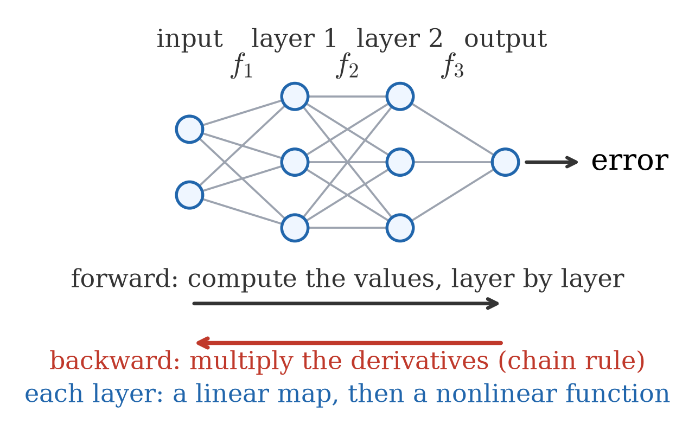
A neural network is a chain of layers: \(f_1\), then \(f_2\), then \(f_3\), …
Each layer is a function: a linear map, then a nonlinear function.
Forward: compute the values, layer by layer, up to the error.
Backward: compute the derivatives, layer by layer, back to the parameters — the chain rule. This is backpropagation.
Such a chain cannot be expanded into one polynomial the way L12 expanded \(\mathrm{SSE}\).
We need the derivative from the stages, one at a time. Start with the smallest chain.
Step 1: our test case, a three-stage chain
Our test case: L09’s one-parameter model, on the same data.
Student 2 at \(w=1\): stage derivatives \(1\), \(-1\), \(4\).
Forward (black): the values \(1\to1\to2\to4\).
Backward (red): start from the error and multiply the stage derivatives on the way back: \(1\to4\to-4\to-4\).
So the guess: \(\dfrac{de_2}{dw}=4\cdot(-1)\cdot1=-4\).
Running a chain backward and multiplying is backpropagation, on the smallest example.
Do rates always multiply along a chain? Step 3.
Step 3: the chain rule — rates multiply along a chain
Chain rule (MML eq. (5.32), p.145). If \(v=f(w)\) and \(z=g(v)\), so that \(z=g(f(w))\), then
\[\frac{dz}{dw}=g'(f(w))\,f'(w),\qquad\text{written also as}\qquad \frac{dz}{dw}=\frac{dz}{dv}\cdot\frac{dv}{dw},\]
with \(\frac{dz}{dv}\) evaluated at \(v=f(w)\). [MASTER]
Step 3: why the chain rule holds (first order)
Two stages: \(v=f(w)\), then \(z=g(v)\). Follow a small step \(\delta\) in \(w\) through both.
Chain rule twice: \(e_i\) through \(r_i\), then \(r_i\) through \(\hat y_i\).
One factor per stage: [MASTER]
\[\frac{de_i}{dw}=\frac{de_i}{dr_i}\cdot\frac{dr_i}{d\hat y_i}\cdot\frac{d\hat y_i}{dw}=2r_i\cdot(-1)\cdot t_i=-2\,t_i\,r_i.\]
The stage-3 and stage-2 factors, \(2r_i\cdot(-1)=-2r_i\), are L09’s \(\frac{d}{dx}(c-x)^2\).
The parameter adds the factor \(t_i\).
Step 4: all students — a sum, then a dot product
One student: \(\frac{de_i}{dw}=-2\,t_i\,r_i\). The error: \(\mathrm{SSE}=e_1+e_2+e_3\).
\(\dfrac{d\,\mathrm{SSE}}{dw}=\dfrac{de_1}{dw}+\dfrac{de_2}{dw}+\dfrac{de_3}{dw}\) — sum rule, MML (5.31), p.145
\(\phantom{\dfrac{d\,\mathrm{SSE}}{dw}}=-2\,(t_1r_1+t_2r_2+t_3r_3)\) — one term per student
\(\phantom{\dfrac{d\,\mathrm{SSE}}{dw}}=-2\,\mathbf t^\top\mathbf r\) — the bracket is a dot product [MASTER]
Step 4: one term per student, and when a term is \(0\)
One student: \(\frac{de_i}{dw}=2r_i\cdot(-1)\cdot t_i\).
A stage is flat at a point when its stage derivative there is \(0\).
One zero factor makes the whole product \(0\), whatever the other factors are.
At \(w=1\), \(\mathbf r=\mathbf y-\mathbf t=(1,2,0)^\top\):
\(i\)
\((t_i,y_i)\)
\(r_i\)
\(\frac{de_i}{dw}=-2\,t_i\,r_i\)
flat stage
why
1
\((0,1)\)
\(1\)
\(0\)
stage 1
\(t_1=0\): \(\hat y_1=w\cdot0\) does not move with \(w\)
2
\((1,3)\)
\(2\)
\(-4\)
none
—
3
\((2,2)\)
\(0\)
\(0\)
stage 3
\(r_3=0\): \(\frac{de_3}{dr_3}=2r_3=0\)
sum: \(\frac{d\,\mathrm{SSE}}{dw}(1)\)
\(-4\)
The derivative of the error is one term per student, added up: training uses the data through these terms.
Step 4: your turn at \(w=\tfrac75\)
Your turn. Model \(\hat y=wt\); data \(\mathbf t=(0,1,2)^\top\) hours, \(\mathbf y=(1,3,2)^\top\) points; take \(w=\tfrac75\) (L09’s best one-parameter rule).
(a) Compute the residual \(\mathbf r=\mathbf y-w\mathbf t\).
(b) Each student contributes \(-2\,t_ir_i\) to \(\dfrac{d\,\mathrm{SSE}}{dw}=-2\,\mathbf t^\top\mathbf r\). Compute the three contributions and their sum.
(c) The sum is \(\dfrac{d\,\mathrm{SSE}}{dw}=0\): \(w=\tfrac75\) is the flat point.
Student 2’s term \(-\tfrac{16}5\) alone says raise \(w\); student 3’s \(+\tfrac{16}5\) alone says lower it. Same size, opposite sign: they cancel.
What if a stage is nonlinear? [UNDERSTAND]
Step 1: every layer of a network ends with a nonlinear function. Our prediction stage \(\hat y_i=wt_i\) is linear. Does the stage-by-stage method still work for a nonlinear stage? Yes: only that stage’s own derivative formula is new; the other stages keep theirs (MML §5.6.2: automatic differentiation multiplies such local derivatives).
Try it: replace the prediction stage \(\hat y_i=wt_i\) by the nonlinear \(\hat y_i=e^{wt_i}\). Same data, same residual and square stages.
stage
derivative, \(\hat y_i=wt_i\)
derivative, \(\hat y_i=e^{wt_i}\)
1, prediction
\(t_i\)
\(t_i\,e^{wt_i}\) (Calculus 1)
2, residual
\(-1\)
\(-1\), same formula
3, square
\(2r_i\)
\(2r_i\), same formula
Product: \(\dfrac{de_i}{dw}=2r_i\cdot(-1)\cdot t_ie^{wt_i}=-2\,t_i\,r_i\,e^{wt_i}\): the old answer times one extra factor \(e^{wt_i}\).
The nonlinear stage at \(w=0\) [UNDERSTAND]
Model \(\hat y_i=e^{wt_i}\); one student: \(\dfrac{de_i}{dw}=-2\,t_i\,r_i\,e^{wt_i}\). Data \((t_i,y_i)=(0,1),(1,3),(2,2)\).
\(\mathrm{SSE}(w)=(1-e^{0})^2+(3-e^{w})^2+(2-e^{2w})^2\) is no longer a quadratic in \(w\); the chain handles it the same way.
student
\((t_i,y_i)\)
\(\hat y_i=e^{0}\)
\(r_i\)
\(-2\,t_i\,r_i\,e^{0}\)
1
\((0,1)\)
\(1\)
\(0\)
\(0\)
2
\((1,3)\)
\(1\)
\(2\)
\(-4\)
3
\((2,2)\)
\(1\)
\(1\)
\(-4\)
sum: \(\frac{d\,\mathrm{SSE}}{dw}(0)\)
\(-8\)
Negative: raising \(w\) a little lowers \(\mathrm{SSE}\).
What if the chain is long? Many small factors
A chain of \(k\) stages: its derivative is a product of \(k\) stage derivatives.
If every stage derivative is about \(0.5\), or about \(0.9\):
number of stages \(k\)
\(0.5^k\)
\(0.9^k\)
\(1\)
\(0.5\)
\(0.9\)
\(10\)
\(\approx0.001\)
\(\approx0.349\)
\(50\)
\(\approx8.9\times10^{-16}\)
\(\approx0.005\)
What if the chain is long? Many small factors
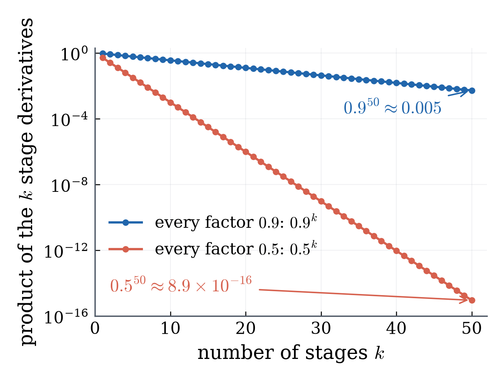
Many factors below \(1\): the product shrinks fast as the chain gets longer.
\(0.9\) looks harmless; \(0.9^{50}\approx0.005\) is not.
The trade-off of depth: vanishing gradients
Product of \(50\) stage derivatives of about \(0.9\): about \(0.005\).
More layers: a more flexible model (and a greater risk of overfitting).
But: a parameter in an early layer gets its derivative through every later layer.
A long product of factors below \(1\) is nearly \(0\).
So that parameter barely moves: its learning is very slow.
This is the vanishing-gradient problem of deep networks. [UNDERSTAND]
A preview of the fix: keep every factor near \(1\) [EXPLORE]
The trouble is a long product of factors below \(1\). Deep networks are built so the factors stay near \(1\):
ReLU nonlinearity, \(\max(0,x)\): where it is active its slope is exactly \(1\).
Skip connections: a layer computes \(x+f(x)\) instead of \(f(x)\). Its derivative is \(1+f'(x)\), which stays near \(1\) when \(f'(x)\) is small.
Both appear in the networks behind today’s AI systems. Not on quizzes or exams.
L13 takeaways (1)
A model is a chain: \(w\to\hat y_i\to r_i\to e_i\).
A vector-valued function \(\R^2\to\R^3\) (MML §5.3, eq. (5.54), p.149).
Nudge each parameter: six responses
Working with: \(\hat{\mathbf y}=X\mathbf w=(w_0,\;w_0+w_1,\;w_0+2w_1)^\top\). The figure starts from \(\mathbf w=\left(\tfrac32,\tfrac12\right)^\top\).
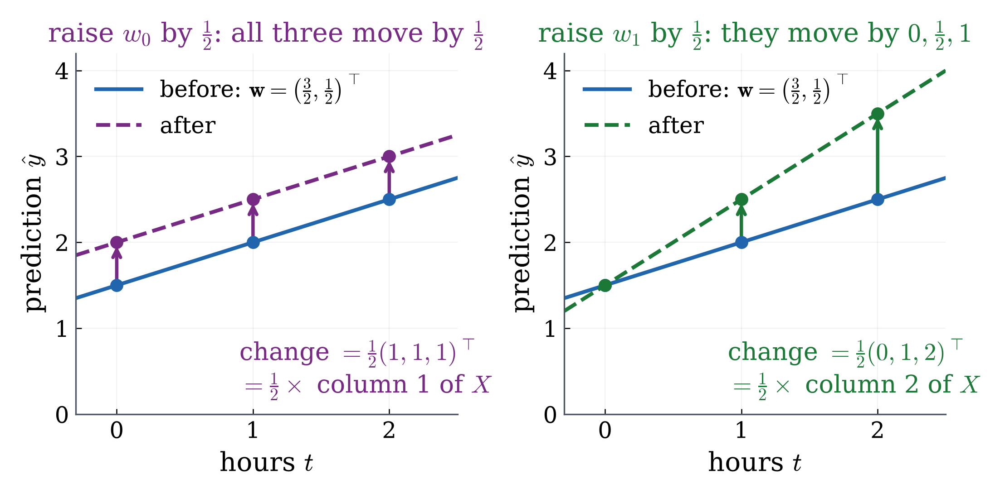
Nudge each parameter: six responses
Working with: \(\hat{\mathbf y}=X\mathbf w=(w_0,\;w_0+w_1,\;w_0+2w_1)^\top\).
nudge
the three predictions move by (per unit of nudge)
\(w_0\)
\((1,1,1)^\top\)
\(w_1\)
\((0,1,2)^\top\)
Each of \(3\) predictions responds to each of \(2\) parameters: six partial derivatives.
With \(1000\) students and \(50\) parameters: \(50{,}000\).
How do we arrange them so that the chain rule still works?
The Jacobian: every partial derivative, in one matrix
Definition (MML Def. 5.6, (5.58)–(5.59), p.150). For \(\mathbf f:\R^n\to\R^m\) with outputs \(f_1,\dots,f_m\) and inputs \(x_1,\dots,x_n\), the Jacobian \(J_{\mathbf f}\), also written \(d\mathbf f/d\mathbf x\), is the \(m\times n\) matrix
\[J_{\mathbf f}=\begin{bmatrix}\dfrac{\partial f_1}{\partial x_1}&\cdots&\dfrac{\partial f_1}{\partial x_n}\\ \vdots&&\vdots\\ \dfrac{\partial f_m}{\partial x_1}&\cdots&\dfrac{\partial f_m}{\partial x_n}\end{bmatrix},\qquad (i,j)\text{ entry }=\frac{\partial f_i}{\partial x_j}:\]
one row per output, one column per input. [MASTER]
Reading a Jacobian
Working with: \(J_{\mathbf f}\) is \(m\times n\), \((i,j)\) entry \(=\partial f_i/\partial x_j\).
Each entry is a partial derivative (L09, MML Def. 5.5).
Each entry is a function of \(\mathbf x\): evaluate at a point to get numbers.
Row \(i\): one output, every input.
Column \(j\): every output, one input.
Quick check (a separate example, not our data): for \(\mathbf f(\mathbf x)=\left(x_1^2x_2,\;3x_1+x_2^2\right)^\top\), what size is \(J_{\mathbf f}\)? Write \(J_{\mathbf f}\), then evaluate it at \(\mathbf x=(1,2)^\top\).
\(X\) and \(-I\) are the same at every point; \(2\mathbf r^\top\) changes with the point, through \(\mathbf r\).
The error stage has one output, so its Jacobian is one row. A row of partial derivatives of one output already has a name in this course.
A one-row Jacobian is the gradient
For \(g:\R^n\to\R\) (\(m=1\)), the Jacobian is the \(1\times n\) row
\[\begin{bmatrix}\partial g/\partial x_1&\cdots&\partial g/\partial x_n\end{bmatrix}\]
That is exactly L11’s gradient \(\nabla g\). [MASTER]
MML calls the row in (5.40) “the gradient of \(f\) or the Jacobian” (p.146; again after Def. 5.6, p.150).
On our data: \(\mathrm{SSE}(w_0,w_1)=3w_0^2+6w_0w_1+5w_1^2-12w_0-14w_1+14\)
\(1\) output, \(2\) inputs, so its Jacobian is one row:
Entry \((i,j)\) is row times column over the \(k\) middle variables:
\[\frac{\partial(\mathbf g\circ\mathbf f)_i}{\partial w_j}=\sum_{l=1}^{k}\frac{\partial g_i}{\partial v_l}\,\frac{\partial v_l}{\partial w_j}\]
If \(n=k=m=1\): every Jacobian is \(1\times1\), and the rule is L13’s
\[\frac{dz}{dw}=\frac{dz}{dv}\cdot\frac{dv}{dw}\]
L11 already used the chain rule
Working with: \(\phi(h)=g(\mathbf w+h\mathbf u)\), the error along a direction \(\mathbf u\) (L11).
L12’s \(\nabla\mathrm{SSE}=-2\,\mathbf r^\top X\), without expanding \(\mathrm{SSE}\).[MASTER] (MML Example 5.11, p.154.)
In \(w_0,w_1\):
\(r_1+r_2+r_3=6-3w_0-3w_1\)
\(r_2+2r_3=7-3w_0-5w_1\)
So the row is \(\begin{bmatrix}6w_0+6w_1-12&6w_0+10w_1-14\end{bmatrix}\) (multiply each by \(-2\))
L09’s partial derivatives, at every \(\mathbf w\).
Your turn: the chain at \(\mathbf w^\ast=\left(\tfrac32,\tfrac12\right)^\top\)
Your turn. Data \(\mathbf y=(1,3,2)^\top\), \(X=\left[\begin{smallmatrix}1&0\\1&1\\1&2\end{smallmatrix}\right]\); the chain \(\nabla\mathrm{SSE}=(2\mathbf r^\top)(-I)X\) with \(\mathbf r=\mathbf y-X\mathbf w\). At \(\mathbf w^\ast=\left(\tfrac32,\tfrac12\right)^\top\):